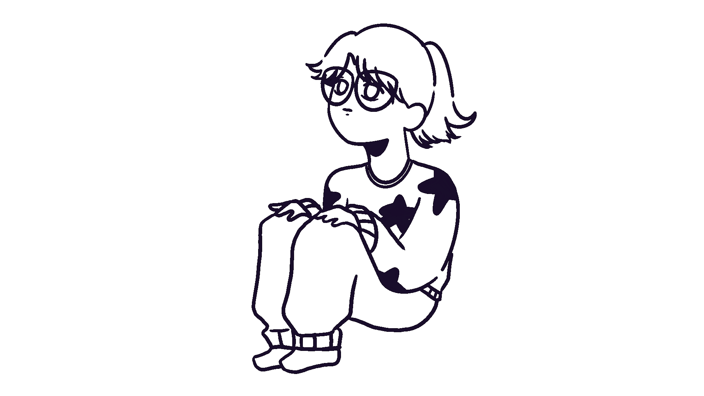
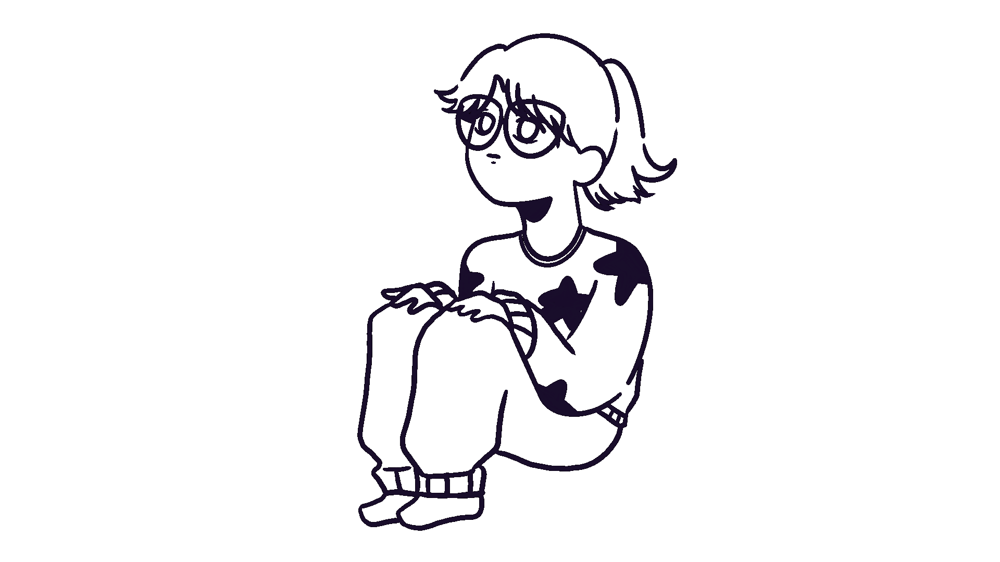

-
Ciao,mi chiamo Suong
 

Apart from my working time, I usually joined numerous online skilled courses like sculpting, watercoloring,origami,etc. Plus I also spend time visiting art museum and art galleries, and workshops . Besides that, I enjoy the time with my friends by hanging out, playing games, and attending artistic activities together. I kindly am interested in spiritual stuffs, especially tarot, for its mental healing.
My name is Nguyen Anh Suong with the nickname Shiren, a Facebook page designer and part-time logo designer from Ho Chi Minh, Vietnam. I used to be a Graphic Design student at Artchitecture University of Ho Chi Minh city. However I now am a Digital Media Design freshman at Rmit University. I also achieved a certificate in Art Deco Illustration from Mads Berg's online course and Consolation Prizes of City in Enviroment Solution Drawing (2007) and Ao Dai Design Competition (2006). Due to this and with my love for Bauhaus, Van Gogh and Picasso's style, my present works all are in mix style among semi-realism, Impressionism and Abstracticism. Though, I do not intend to limit myself at there and I am on my explore to develop my future Illustration and Design in a more dymic expression.
Contact me •Suongdesignsmedia@gmail.com